USER MANUAL · CREW CHANGE TRACKER
คู่มือการใช้งาน
ระบบติดตามงานเปลี่ยนลูกเรือ
บริษัท ซัคเซส มารีน เซอร์วิส จำกัด
เวอร์ชัน 1.0 · อ้างอิงใบเสนอราคา QT-2569-0921-01
ผู้พัฒนา นายศุภณัฐ จันพันดวง · 061-169-9332 · LINE: nongpeetza
ภาพในคู่มือใช้ข้อมูลสมมติเพื่อแสดงตัวอย่าง
2. เริ่มใช้งาน
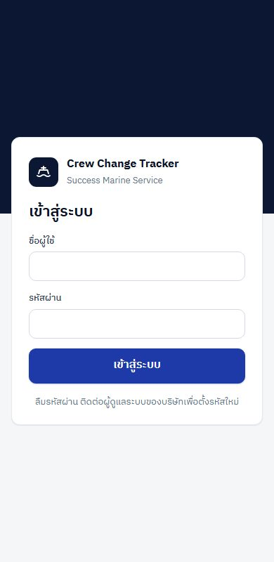
เข้าสู่ระบบ
- เปิดลิงก์ระบบที่ผู้ดูแลระบบแจ้ง
- ใส่ชื่อผู้ใช้และรหัสผ่าน แล้วกด "เข้าสู่ระบบ"
- ระบบจำการเข้าระบบไว้ 60 วันบนเครื่องนั้น ไม่ต้องเข้าใหม่ทุกครั้ง
ใส่รหัสผิด 8 ครั้งติดกัน บัญชีจะถูกล็อก 15 นาที หรือให้ผู้ดูแลระบบปลดล็อกให้
ติดตั้งเป็นไอคอนบนมือถือ
Android (Chrome): เปิดระบบ แตะเมนูจุดสามจุดมุมขวาบน แล้วเลือก "เพิ่มลงในหน้าจอหลัก" หรือ "ติดตั้งแอป"
iPhone (Safari): เปิดระบบ แตะปุ่มแชร์ แล้วเลือก "เพิ่มไปยังหน้าจอโฮม"
หลังติดตั้ง แตะไอคอน Crew Change ได้เหมือนแอปทั่วไป ไม่ต้องโหลดจาก Store
เปลี่ยนรหัสผ่าน
แตะ "บัญชี" (มุมขวาบนบนคอมพิวเตอร์ หรือแถบล่างบนมือถือ) แล้วกรอกรหัสเดิมและรหัสใหม่ อย่างน้อย 8 ตัวอักษร เครื่องอื่นที่เคยเข้าระบบด้วยบัญชีนี้จะต้องเข้าใหม่
3. สำนักงาน: เปิดงานและทำงานตาม 9 ขั้นตอน
หน้างานทั้งหมด
แท็บ "กำลังทำ" คืองานที่เปิดอยู่ เรียงตาม ETA · แท็บ "ปิดแล้ว" คืองานที่ส่งสรุปบัญชีเรียบร้อย กดการ์ดงานเพื่อเข้าไปทำต่อ
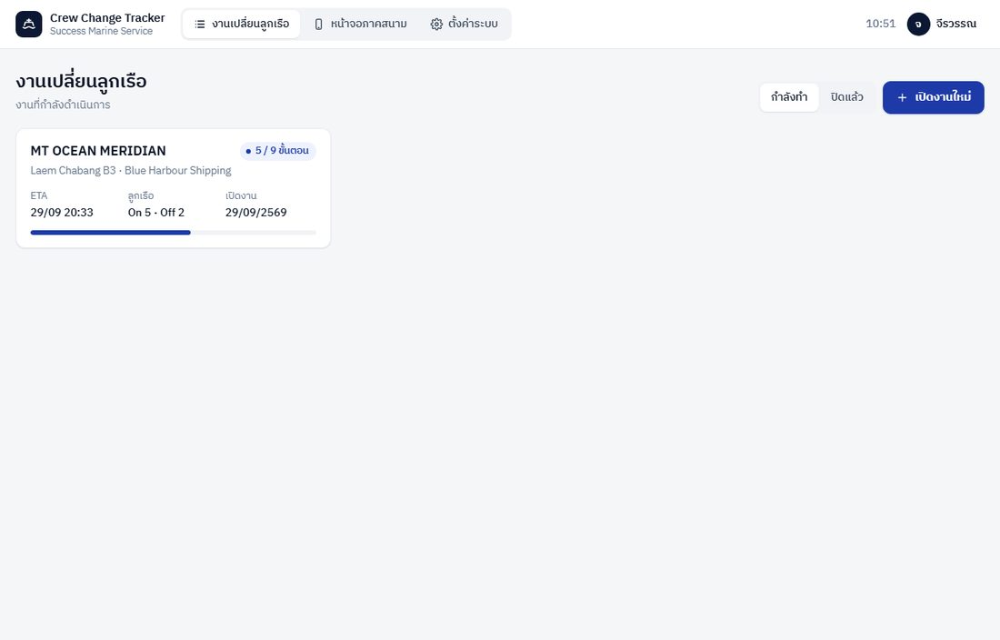
เปิดงานใหม่
กด "เปิดงานใหม่" กรอกชื่อเรือ ท่าเรือ Owner Local agent อีเมล และ ETA / ETB / ETD ข้อมูลที่ยังไม่รู้เว้นว่างไว้ก่อนได้ แก้ภายหลังได้ด้วยปุ่มดินสอบนการ์ดเรือด้านซ้าย
ทุกขั้นตอนมีปุ่ม "ทำขั้นนี้เสร็จแล้ว" ขั้นที่เสร็จจะเป็นสีเขียวในแถบขั้นตอนด้านซ้าย ความคืบหน้าแสดงบนการ์ดเรือ · ใต้หัวข้อทุกขั้นยกข้อความ "ขั้นตอนเดิมของบริษัท" ไว้เทียบ
ขั้นตอนที่ 1 · รับอีเมลเปลี่ยนลูกเรือ ตรวจเอกสารและข้อมูล
- เพิ่มลูกเรือจากแบบฟอร์ม: ชื่อ ตำแหน่ง ประเภท (On signer ขึ้นเรือ / Off signer ลงเรือ) เที่ยวบิน สัญชาติ เลขพาสปอร์ต
- กดปุ่ม "ได้รับ / ยังไม่มี" ในตารางเพื่อเปลี่ยนสถานะเอกสารแต่ละใบ แถวที่ขาดเอกสารมีแถบแดงด้านซ้าย
- กด "คัดลอกรายการที่ขาด" แล้ววางในอีเมลขอเอกสารจากลูกค้า
- ปุ่มดินสอ = แก้ไขข้อมูลลูกเรือ · ปุ่มถังขยะ = ลบลูกเรือ
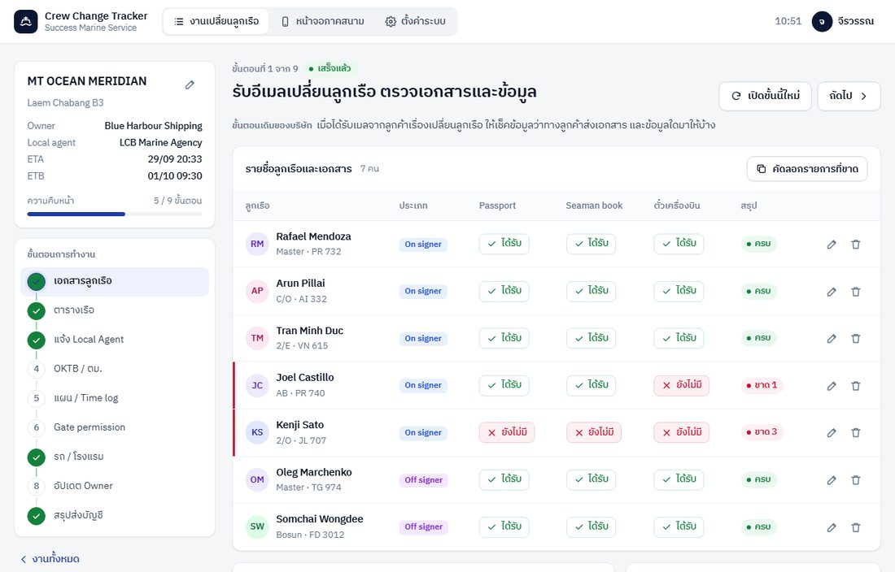
ขั้นตอนที่ 2 · เช็คตารางเรือกับ Local agent และอัปเดตลูกค้า
- ใส่ ETA / ETB / ETD ใหม่ และ "แจ้งโดย / แหล่งที่มา" แล้วกด "บันทึกตารางเรือ" ระบบเก็บประวัติทุกครั้งที่เปลี่ยน
- กด "คัดลอกข้อความอัปเดตลูกค้า" ได้ข้อความภาษาอังกฤษพร้อมส่ง แล้วกด "บันทึกว่าแจ้งแล้ว"
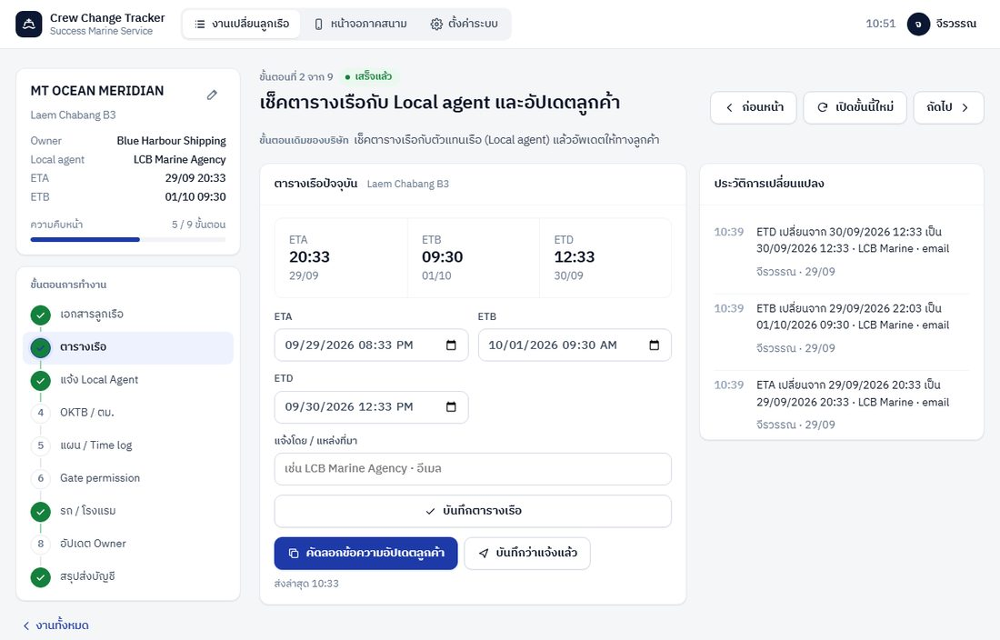
ขั้นตอนที่ 3 · แจ้ง Local Agent รับการแต่งตั้งจาก Owner
เลือกเรื่องที่ได้รับแต่งตั้ง ร่างอีเมลด้านล่างเปลี่ยนตามทันที แก้ข้อความได้ก่อนกด "คัดลอกอีเมล" แล้วส่งจากอีเมลบริษัท จากนั้นกด "บันทึกว่าส่งแล้ว"
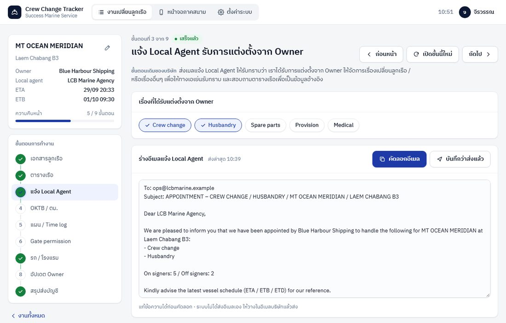
ขั้นตอนที่ 4 · ออก OKTB ส่ง Meeting point และเอกสาร ตม. สนามบิน
- ตารางเช็กลิสต์ต่อคน 3 เรื่อง: OKTB, Meeting point, ยื่นเอกสาร ตม.
- ลูกเรือที่เอกสารจากขั้นที่ 1 ยังไม่ครบ จะขึ้น "รอเอกสารครบ" และบันทึกว่าออก OKTB ไม่ได้
- ใส่กำหนดยื่นเอกสาร ตม. ระบบนับถอยหลัง และเตือนบนแดชบอร์ดล่วงหน้า 6 ชั่วโมงและเมื่อเกินเวลา
- ตัวเอกสาร OKTB ยังออกตามวิธีเดิมของบริษัท ระบบใช้บันทึกสถานะและเตือนเวลา
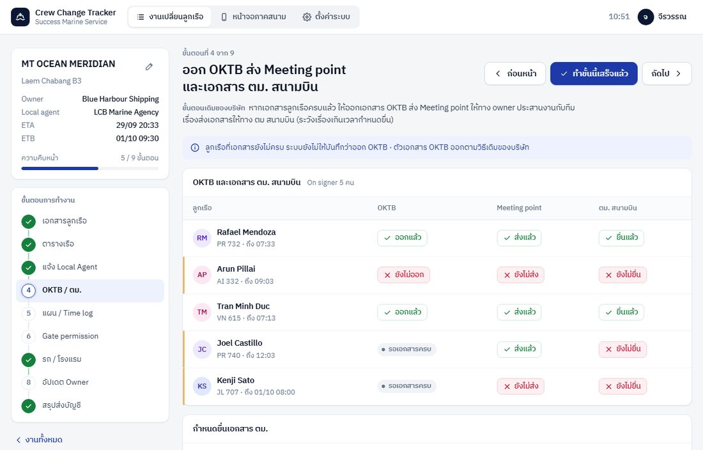
ขั้นตอนที่ 5 · แผนเปลี่ยนลูกเรือและ Time log
- กดชื่อลูกเรือที่หัวตาราง เพื่อใส่เวลาตามแผนของแต่ละจุด
- ใส่เวลาจุดแรก (เช่น เครื่องลง) แล้วกด "เติมเวลาที่เหลือจากจุดก่อนหน้า" ระบบคำนวณตามระยะเวลามาตรฐาน แล้วแก้ทีละจุดได้
- ตัวเข้ม = เวลาจริงที่พนักงานกดยืนยัน · ตัวจาง = เวลาตามแผนที่ยังไม่ถึง · ช้ากว่าแผนขึ้นป้ายสีแดงพร้อมจำนวนนาที
- ถ้าลูกเรือช้า ระบบเลื่อนเวลาคาดการณ์ของจุดถัดไปให้เอง (เช่น "คาดว่า 11:05") จนถึงจุดที่ตั้งไว้ในหน้าตั้งค่า
- ร่างอีเมลแผนส่ง Owner / กัปตันอยู่ท้ายหน้า
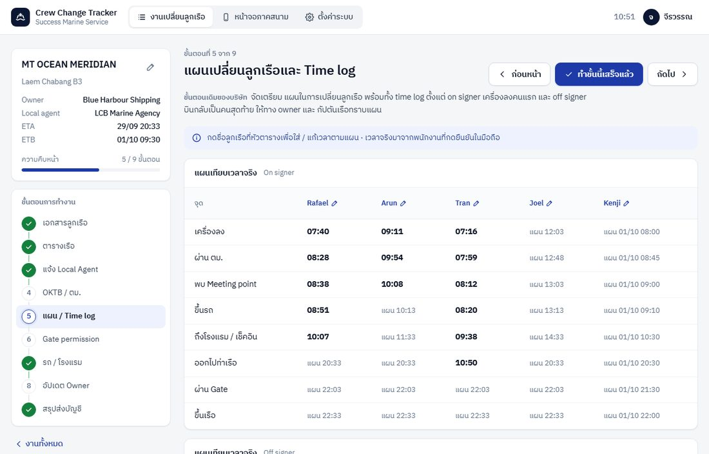
ขั้นตอนที่ 6 · อีเมลขอผ่านท่า GATE PERMISSION
ระบบดึงรายชื่อลูกเรือ พาสปอร์ต Boarding agent (พนักงานผู้ดูแล) คนขับ และทะเบียนรถจากงานมาใส่ร่างอีเมลให้ครบ ถ้าลูกเรือบางคนยังไม่มีผู้ดูแลหรือรถ ระบบเตือนให้ไปจัดที่ขั้นตอนที่ 7 ก่อน
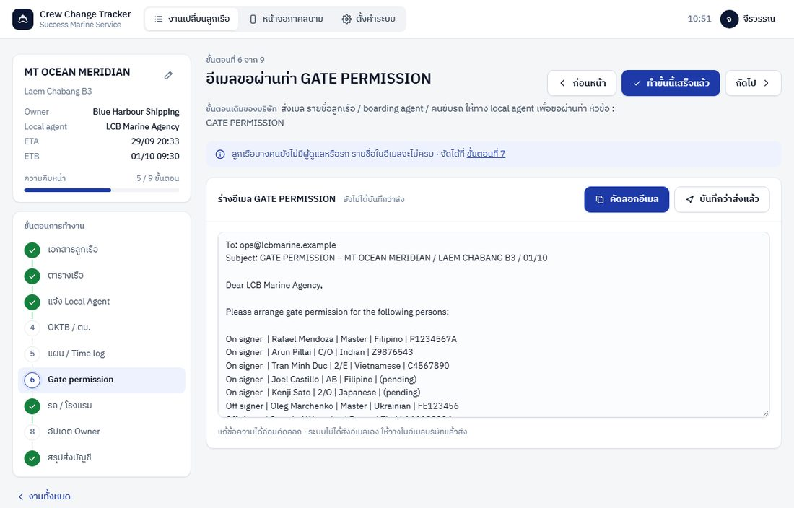
ขั้นตอนที่ 7 · จัดรถ จัดโรงแรม ตามแผน
- เลือกรถ โรงแรม เลขห้อง และ ผู้ดูแล ให้ลูกเรือแต่ละคน บันทึกทันทีที่เลือก
- เลือกผู้ดูแลแล้ว ลูกเรือคนนั้นจะไปขึ้นในมือถือของพนักงานคนนั้นทันที
- ปุ่ม "เพิ่มรถ" / "เพิ่มโรงแรม" เพิ่มรายการใหม่ได้จากหน้านี้
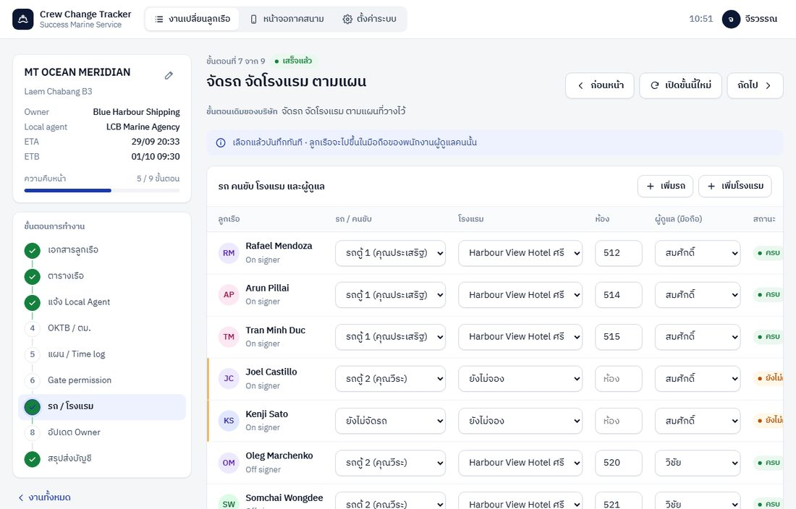
ขั้นตอนที่ 8 · ติดตามและอัปเดต Owner แบบเรียลไทม์
- ตัวเลขด้านบน: ลูกเรือในงาน กำลังเดินทาง ช้ากว่าแผน และต้องเตรียมภายใน 1 ชั่วโมง หน้าจออัปเดตเองทุก 20 วินาที
- ตารางสถานะลูกเรือ: กดแถวเพื่อดูแผนเทียบเวลาจริง หมายเหตุ และรูปที่พนักงานแนบ (กดรูปเพื่อดูเต็มจอ)
- ต้องเตรียมตอนนี้: ระบบบอกว่าต้องแจ้งรถ โรงแรม หรือ Local Agent เรื่องใครก่อน
- อีเมลอัปเดต Owner: เลือก "สรุปแผนคืนนี้" ก่อนดึก / "สรุปผลเช้านี้" ตอนเช้า / "อัปเดตสถานะตอนนี้" แล้วคัดลอกไปส่ง
- ลิงก์ติดตามสำหรับ Owner: คัดลอกลิงก์ส่งให้ Owner ครั้งเดียว ดูหัวข้อที่ 5
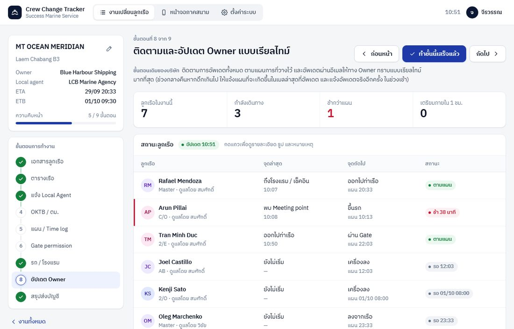
ขั้นตอนที่ 9 · สรุปกิจกรรมและรายชื่อลูกเรือส่งฝ่ายบัญชี
- สรุปจำนวนลูกเรือ รถที่ใช้ ห้องพัก และจุดที่ช้ากว่าแผน พร้อม Time log ทุกจุดของทุกคน
- ดาวน์โหลด Excel: ได้ไฟล์ 4 แผ่นงาน Summary / Crew / Time log / Notes
- พิมพ์ / บันทึก PDF: เปิดรายงานขนาด A4 แล้วเลือกเครื่องพิมพ์ "Save as PDF"
- ปิดงาน เมื่อส่งสรุปบัญชีแล้ว งานย้ายไปแท็บ "ปิดแล้ว" แก้ไขไม่ได้ และหายจากมือถือพนักงาน · เปิดงานอีกครั้งได้ถ้าจำเป็น
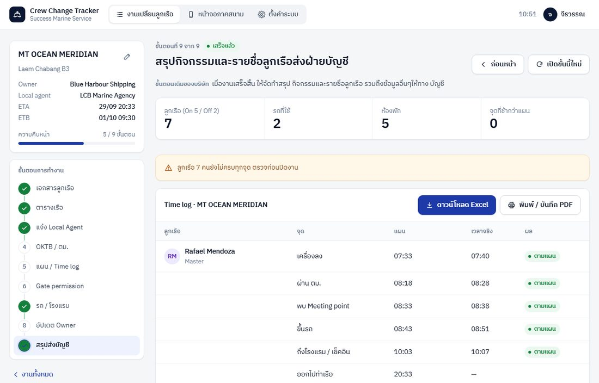
4. พนักงานภาคสนาม: อัปเดตจากมือถือ
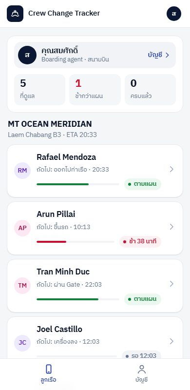
รายชื่อลูกเรือของฉัน
หน้าแรกแสดงลูกเรือที่สำนักงานมอบหมายให้ แยกตามเรือ บอกจุดถัดไป เวลา และสถานะ (ตามแผน / ช้า / ครบแล้ว)
ตัวเลขด้านบน: จำนวนที่ดูแล · ช้ากว่าแผน · ครบทุกจุดแล้ว
แตะชื่อลูกเรือเพื่อเปิดหน้าอัปเดต
หัวหน้างานภาคสนามจะเห็นลูกเรือทุกคน พร้อมชื่อผู้ดูแลของแต่ละคน
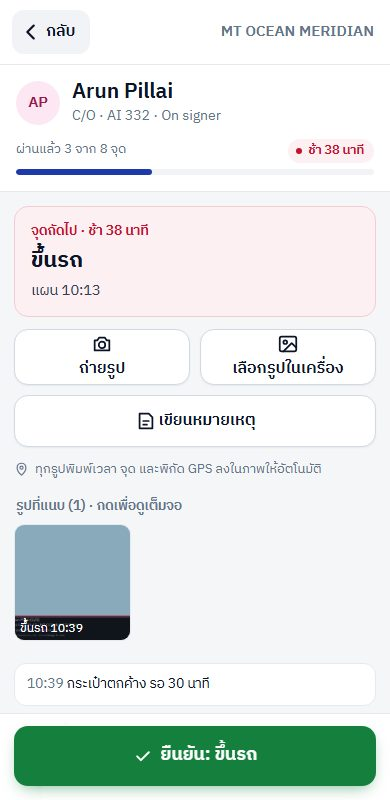
ยืนยันแต่ละจุด
- กดปุ่มเขียวด้านล่าง "ยืนยัน: ชื่อจุด" เมื่อถึงจุดนั้นจริง
- ระบบบันทึกเวลาเอง สำนักงานเห็นทันที ปุ่มจะเปลี่ยนเป็นจุดถัดไป
- กดผิด ใช้ปุ่ม "กดผิด ย้อนกลับ 1 จุด"
ถ่ายรูปและหมายเหตุ
ถ่ายรูป เปิดกล้อง · เลือกรูปในเครื่อง ใช้รูปที่มีอยู่ ระบบพิมพ์จุด ชื่อลูกเรือ วันเวลา ชื่อเรือ และพิกัด GPS ลงบนรูปให้อัตโนมัติ
เขียนหมายเหตุ เช่น กระเป๋าตกค้าง รอเจ้าหน้าที่ สำนักงานเห็นในแดชบอร์ดและอีเมลอัปเดต Owner
ปุ่ม "โทร" ข้างชื่อรถและโรงแรมใช้โทรหาคนขับหรือโรงแรมได้ทันที
ไม่มีสัญญาณ: กดยืนยันได้ตามปกติ ระบบเก็บเวลาที่กดไว้ในเครื่องและขึ้นคำว่า "รอส่ง" เมื่อมีสัญญาณจะส่งให้เองพร้อมเวลาเดิม · ครั้งแรกที่ถ่ายรูป มือถือจะถามสิทธิ์กล้องและตำแหน่ง ให้กด "อนุญาต"
5. ลิงก์ติดตามสำหรับ Owner
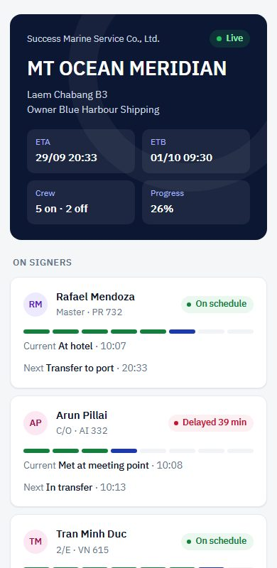
คัดลอกลิงก์จากขั้นตอนที่ 8 ส่งให้ Owner หรือกัปตันทางอีเมลหรือ LINE ครั้งเดียว Owner เปิดดูได้ตลอด 24 ชั่วโมง ไม่ต้องสมัครบัญชี
- เป็นภาษาอังกฤษ แสดงสถานะ จุดปัจจุบัน จุดถัดไป และความคืบหน้าของลูกเรือทุกคน
- ไม่แสดงเลขพาสปอร์ต หมายเหตุภายใน รูป และข้อมูลพนักงาน
- หน้าอัปเดตเองอัตโนมัติ
- ถ้าต้องการยกเลิกลิงก์เดิม กด "สร้างลิงก์ใหม่" ลิงก์เดิมจะเปิดไม่ได้ทันที แล้วส่งลิงก์ใหม่ให้ Owner
6. ผู้ดูแลระบบ
ผู้ใช้งาน
- "เพิ่มผู้ใช้": ใส่ชื่อ ชื่อผู้ใช้ภาษาอังกฤษ สิทธิ์ รหัสผ่านเริ่มต้น แล้วแจ้งพนักงาน · ใช้งานได้สูงสุด 15 บัญชีพร้อมกันตามใบเสนอราคา
- เลขบัตรประชาชนของพนักงานภาคสนามใช้ในอีเมล GATE PERMISSION
- "เห็นลูกเรือทุกคน" สำหรับหัวหน้างานภาคสนาม
- ลืมรหัสผ่าน: กด "แก้ไข" แล้วตั้งรหัสใหม่ · ใส่รหัสผิดจนถูกล็อก: ติ๊ก "ปลดล็อกบัญชี"
- พนักงานลาออก: ปิดบัญชีแทนการลบ ประวัติงานเดิมยังอยู่ครบ
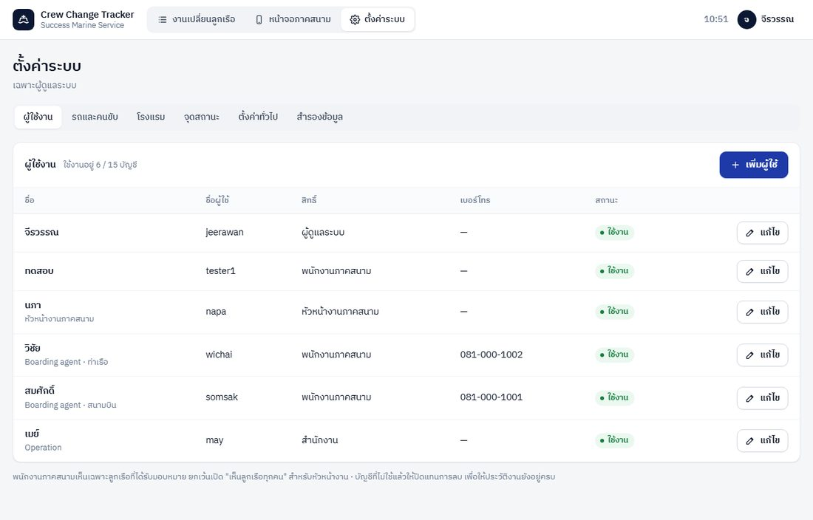
จุดสถานะ
- ตั้งชื่อจุดภาษาไทย (พนักงานเห็น) และภาษาอังกฤษ (Owner เห็น) แยก On signer / Off signer
- "นาทีจากจุดก่อน" ใช้เติมเวลาแผนอัตโนมัติในขั้นตอนที่ 5
- "จุดสิ้นสุดการเลื่อนเวลา": ถ้าลูกเรือช้า ระบบเลื่อนเวลาคาดการณ์ของจุดถัดไปจนถึงจุดนี้ (ค่าเริ่มต้น = ถึงโรงแรม) จุดหลังจากนี้ยึดตามตารางเรือ
- จุดที่แก้ไขใช้กับลูกเรือที่เพิ่มหลังจากบันทึก ลูกเรือเดิมใช้จุดชุดเดิมต่อ
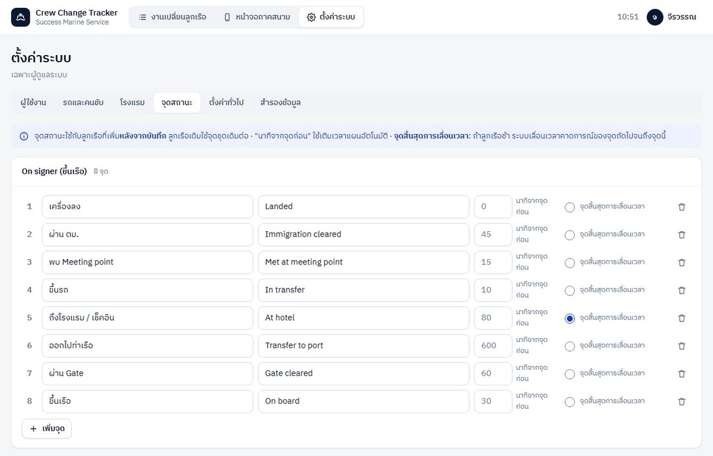
ตั้งค่าทั่วไป · รถและคนขับ · โรงแรม
ชื่อบริษัท ลายเซ็นท้ายอีเมล เวลาที่ถือว่า "ช้ากว่าแผน" (ค่าเริ่มต้น 10 นาที) รายการเอกสารที่ต้องมีต่อคน และเรื่องที่ได้รับแต่งตั้ง · รถและโรงแรมที่ไม่ใช้แล้วให้ปิดใช้งานแทนการลบ
สำรองข้อมูล
- "ดาวน์โหลด Excel ทั้งระบบ" ได้ข้อมูลทั้งหมดตอนนั้นเป็นไฟล์เดียว
- ทุกวันที่ 1 ของเดือน ระบบสร้างไฟล์สำรองของเดือนก่อนให้อัตโนมัติ ดาวน์โหลดเก็บไว้ในเครื่องบริษัทได้
- ฐานข้อมูลสำรองอัตโนมัติ กู้คืนย้อนหลังได้ 30 วัน (ติดต่อผู้พัฒนา)
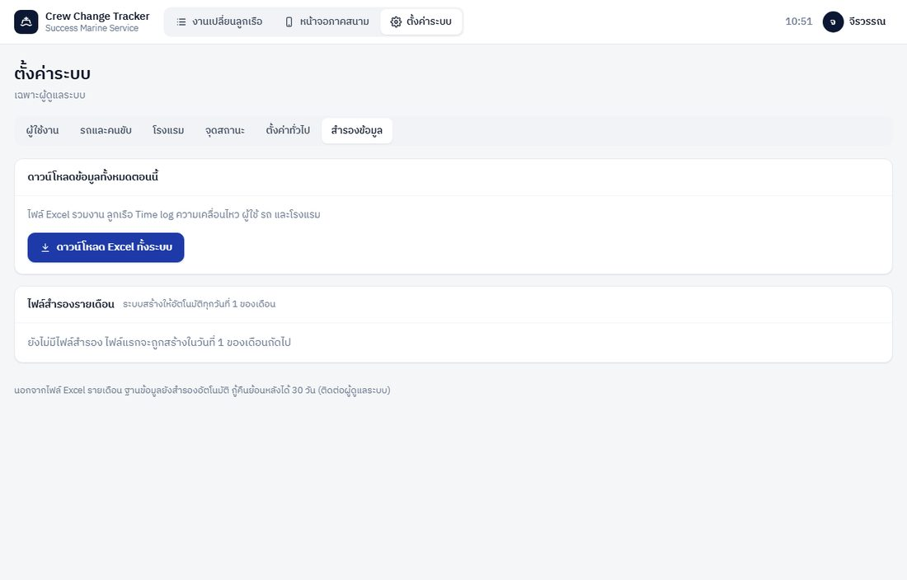
7. คำถามที่พบบ่อยและการแก้ปัญหา
| อาการ | วิธีแก้ |
|---|
| ลืมรหัสผ่าน / บัญชีถูกล็อก | ให้ผู้ดูแลระบบตั้งรหัสใหม่หรือปลดล็อกที่หน้าตั้งค่า หัวข้อผู้ใช้งาน · ถ้าไม่ปลดล็อก ระบบปลดเองใน 15 นาที |
| พนักงานไม่เห็นลูกเรือในมือถือ | ตรวจขั้นตอนที่ 7 ว่าเลือก "ผู้ดูแล" เป็นพนักงานคนนั้นแล้ว และงานยังไม่ปิด |
| รูปไม่มีพิกัด GPS | เปิดตำแหน่ง (Location) ในมือถือ และอนุญาตให้เบราว์เซอร์ใช้ตำแหน่ง รูปที่ไม่มี GPS ยังบันทึกเวลาและจุดครบ |
| กดยืนยันแล้วขึ้น "รอส่ง" | ไม่มีสัญญาณขณะกด ระบบส่งให้เองเมื่อมีสัญญาณ ไม่ต้องกดซ้ำ |
| กดยืนยันผิดจุด | กด "กดผิด ย้อนกลับ 1 จุด" แล้วกดใหม่ในเวลาที่ถูกต้อง |
| อีเมลไม่ถูกส่ง | ระบบร่างอีเมลเท่านั้น ต้องคัดลอกไปส่งจากอีเมลบริษัท แล้วกด "บันทึกว่าส่งแล้ว" |
| Owner เปิดลิงก์ไม่ได้ | ลิงก์อาจถูกสร้างใหม่แล้ว คัดลอกลิงก์ล่าสุดจากขั้นตอนที่ 8 ส่งให้อีกครั้ง |
| เพิ่มผู้ใช้ไม่ได้ | บัญชีที่ใช้งานครบ 15 บัญชีแล้ว ปิดบัญชีที่ไม่ใช้ก่อน |
ติดต่อผู้พัฒนา: นายศุภณัฐ จันพันดวง · 061-169-9332 · LINE: nongpeetza · แก้ไขข้อผิดพลาดของระบบฟรี 90 วันหลังส่งมอบ และต่อเนื่องตลอดที่ต่ออายุค่าบริการ